Impedance Spectroscopy · Materials Characterization임피던스 분광법 · 재료 분석Phổ trở kháng · Phân tích vật liệu
Tran Thi Huyen Tran
Materials scientist (Ph.D.) working on impedance spectroscopy — physics-based modelling, measurement automation in Python, and characterization of ceramics, electrolytes and Li-ion cells over a wide temperature range under controlled atmospheres. I also work on human body impedance and on wavelet-based fast impedance spectroscopy.임피던스 분광법을 연구하는 재료공학 박사입니다. 물리 기반 모델링, Python 기반 측정 자동화, 그리고 넓은 온도 범위와 분위기 제어 조건에서 세라믹·전해질·리튬이온 셀의 특성 평가를 수행합니다. 이와 함께 인체 임피던스와 웨이블릿 기반 고속 임피던스 분광법을 연구합니다.Tiến sĩ Khoa học Vật liệu, nghiên cứu phổ trở kháng — mô hình dựa trên vật lý, tự động hoá phép đo bằng Python, và phân tích gốm, chất điện giải, pin Li-ion trong dải nhiệt độ rộng và môi trường khí kiểm soát. Ngoài ra tôi nghiên cứu trở kháng cơ thể người và phổ trở kháng nhanh dựa trên biến đổi wavelet.
Gwangju, Republic of Korea대한민국 광주Gwangju, Hàn Quốc
Focus연구 분야Hướng nghiên cứu
How I work연구 방식Cách tôi làm việc
I design measurement systems end to end — instrument control, synchronisation, acquisition, and physics-based interpretation — so that characterization becomes a reproducible system rather than a one-off experiment.장비 제어부터 동기화, 데이터 수집, 물리 기반 해석까지 측정 시스템 전체를 설계합니다. 특성 평가가 일회성 실험이 아니라 재현 가능한 시스템이 되도록 하는 것이 목표입니다.Tôi thiết kế hệ đo trọn vẹn từ đầu đến cuối — điều khiển thiết bị, đồng bộ, thu thập dữ liệu và diễn giải dựa trên vật lý — để việc phân tích đặc trưng trở thành một hệ thống tái lập được, thay vì một thí nghiệm đơn lẻ.
Materials characterization재료 특성 평가Phân tích đặc trưng vật liệu
Impedance and dielectric spectroscopy, XRD, SEM, TEM, DSC/DTA, together with thermal and controlled-atmosphere processing.임피던스·유전 분광법, XRD, SEM, TEM, DSC/DTA, 그리고 열처리 및 분위기 제어 공정.Phổ trở kháng và điện môi, XRD, SEM, TEM, DSC/DTA, cùng với xử lý nhiệt và môi trường khí kiểm soát.
Measurement automation측정 자동화Tự động hoá phép đo
Python/SCPI instrument control, temperature synchronisation, stabilisation criteria and multi-channel acquisition — including a fast impedance system using PRBS excitation and continuous wavelet transform, developed with the Jožef Stefan Institute.Python/SCPI 기반 장비 제어, 온도 동기화, 안정화 기준 설정, 다채널 측정. PRBS 여기와 연속 웨이블릿 변환을 이용한 고속 임피던스 측정 시스템을 Jožef Stefan Institute와 공동 개발.Điều khiển thiết bị bằng Python/SCPI, đồng bộ nhiệt độ, tiêu chí ổn định và thu thập đa kênh — bao gồm hệ đo trở kháng nhanh dùng kích thích PRBS và biến đổi wavelet liên tục, phát triển cùng Viện Jožef Stefan.
Modelling & data analysis모델링 및 데이터 분석Mô hình & phân tích dữ liệu
Physics-based and equivalent-circuit modelling, CNLS fitting, Kramers–Kronig validation and Python data pipelines — used to separate cathode and anode contributions in full cells and to quantify ion transport.물리 기반 및 등가회로 모델링, CNLS 피팅, Kramers–Kronig 검증, Python 데이터 파이프라인. 풀셀에서 양극·음극 기여를 분리하고 이온 수송을 정량화하는 데 활용.Mô hình dựa trên vật lý và mạch tương đương, CNLS fitting, kiểm tra Kramers–Kronig và pipeline dữ liệu Python — dùng để tách đóng góp của cathode và anode trong full cell và định lượng vận chuyển ion.
Systems I work on연구 대상 시스템Các hệ tôi nghiên cứu
AlN ceramics for semiconductor CVD equipment, Li-ion full cells, liquid and polymer electrolytes, polycrystalline solid electrolytes, piezoelectric ceramics — and the human body.반도체 CVD 장비용 AlN 세라믹, 리튬이온 풀셀, 액체·고분자 전해질, 다결정 고체 전해질, 압전 세라믹, 그리고 인체.Gốm AlN cho thiết bị CVD bán dẫn, full cell Li-ion, chất điện giải lỏng và polymer, chất điện giải rắn đa tinh thể, gốm áp điện — và cơ thể người.
Projects연구 과제Dự án
Funded research programmes참여 연구 과제Các đề tài đã tham gia
Seven funded programmes, spanning industry contracts and national research grants. In each of them my part was the impedance methodology: building the measurement system, and turning the spectra into physical parameters.산업체 과제와 국가 연구과제를 포함해 총 7개 과제에 참여했습니다. 각 과제에서 제가 맡은 부분은 임피던스 방법론 — 측정 시스템 구축과, 스펙트럼을 물리적 파라미터로 환산하는 작업입니다.Bảy đề tài được tài trợ, gồm cả hợp đồng với doanh nghiệp và đề tài nghiên cứu quốc gia. Phần việc của tôi trong mỗi đề tài là phương pháp luận trở kháng: xây dựng hệ đo, và chuyển phổ đo thành các tham số vật lý.
TODO — TODO · Samsung Electronics
Electrical characterization of AlN ceramics for semiconductor process equipment반도체 공정 장비용 AlN 세라믹의 전기적 특성 평가Đánh giá tính chất điện của gốm AlN cho thiết bị công nghệ bán dẫn
Wide-temperature impedance mapping under controlled atmospheres; separation of the surface shorting path from the intrinsic response.분위기 제어 조건에서의 광온도역 임피던스 매핑, 표면 단락 경로와 본질적 응답의 분리.Lập bản đồ trở kháng trên dải nhiệt độ rộng trong môi trường khí kiểm soát; tách đường ngắn mạch bề mặt khỏi đáp ứng nội tại.
TODO — TODO · Samsung SDI
Impedance diagnostics of Li-ion cells and electrode materials리튬이온 셀 및 전극 소재의 임피던스 진단Chẩn đoán trở kháng pin Li-ion và vật liệu điện cực
Separation of cathode and anode contributions in full cells, and physics-based interpretation of the diffusion regime.풀셀에서 양극·음극 기여 분리 및 확산 영역의 물리 기반 해석.Tách đóng góp của cathode và anode trong full cell, diễn giải vùng khuếch tán dựa trên vật lý.
2018 — TODO · NRF Korea, Ministry of Education
Human body segment impedance: measurement platform and modelling인체 부위별 임피던스: 측정 플랫폼 및 모델링Trở kháng theo vùng cơ thể người: nền tảng đo và mô hình hoá
Multi-channel segmental EIS on 500+ IRB-approved participants, stray-impedance analysis of the measurement chain, and a Nernst–Planck transmission-line description of body fluid. NRF 2018R1D1A1B0705008913.IRB 승인 참가자 500명 이상에 대한 다채널 부위별 EIS 측정, 측정 회로의 부유 임피던스 해석, 체액에 대한 Nernst–Planck 전송선 모델. 과제번호 NRF 2018R1D1A1B0705008913.Đo EIS theo vùng đa kênh trên hơn 500 người tham gia được IRB phê duyệt, phân tích trở kháng ký sinh của hệ đo, và mô tả dịch cơ thể bằng transmission-line Nernst–Planck. Mã đề tài NRF 2018R1D1A1B0705008913.
2018 — TODO · NRF Korea, MSIT
Physics-based impedance modelling of ionic and mixed conductors이온·혼합 전도체의 물리 기반 임피던스 모델링Mô hình trở kháng dựa trên vật lý cho vật liệu dẫn ion và dẫn hỗn hợp
Simultaneous fitting of whole temperature series for polycrystalline solid electrolytes, without constant-phase elements. NRF-2018R1A5A1025224.CPE를 사용하지 않고 다결정 고체 전해질의 전체 온도 계열을 동시 피팅. 과제번호 NRF-2018R1A5A1025224.Khớp đồng thời toàn bộ chuỗi nhiệt độ cho chất điện giải rắn đa tinh thể, không dùng phần tử pha không đổi. Mã đề tài NRF-2018R1A5A1025224.
TODO — TODO · Jožef Stefan Institute, Slovenia
Fast impedance spectroscopy by broadband excitation광대역 여기를 이용한 고속 임피던스 분광법Phổ trở kháng nhanh bằng kích thích dải rộng
PRBS excitation and continuous wavelet transform for cylindrical Li-ion cells, with an automated temperature and SOC schedule in Python.원통형 리튬이온 셀에 대한 PRBS 여기와 연속 웨이블릿 변환, Python 기반 온도·SOC 자동 측정 스케줄 구축.Kích thích PRBS và biến đổi wavelet liên tục cho pin Li-ion hình trụ, với lịch đo nhiệt độ và SOC tự động bằng Python.
Portfolio포트폴리오Portfolio
Research activity연구 활동Hoạt động nghiên cứu
Fast impedance spectroscopy by PRBS excitation and wavelet transformPRBS 여기와 웨이블릿 변환을 이용한 고속 임피던스 분광법Phổ trở kháng nhanh bằng kích thích PRBS và biến đổi wavelet
Cylindrical Li-ion cells excited with a pseudo-random binary sequence instead of a stepped sine sweep; the impedance is reconstructed from the voltage–current transient by a continuous Morse wavelet transform. Keysight N6705C with an N6781A two-quadrant SMU, driven from Python over SCPI, with the Jožef Stefan Institute, Slovenia. Method after G. Nusev et al., IEEE Access9, 46152–46165 (2021).단계적 정현파 대신 의사난수 이진 신호(PRBS)를 인가하고, 전압–전류 과도응답에서 연속 Morse 웨이블릿 변환으로 임피던스를 복원. Keysight N6705C와 N6781A 2사분면 SMU를 Python/SCPI로 제어. 슬로베니아 Jožef Stefan Institute와 공동 수행, 기법은 G. Nusev et al., IEEE Access9, 46152–46165 (2021).Pin Li-ion hình trụ kích thích bằng chuỗi nhị phân giả ngẫu nhiên thay cho quét sin từng bước; trở kháng tái dựng từ quá độ điện áp–dòng điện bằng biến đổi wavelet Morse liên tục. Keysight N6705C với SMU hai góc phần tư N6781A, điều khiển bằng Python qua SCPI, hợp tác với Viện Jožef Stefan, Slovenia. Phương pháp theo G. Nusev và cs., IEEE Access9, 46152–46165 (2021).
From a 20-minute PRBS record to a full impedance spectrum20분 PRBS 측정에서 전체 임피던스 스펙트럼까지Từ bản ghi PRBS 20 phút đến phổ trở kháng đầy đủ
PRBS excitationPRBS 여기Kích thích PRBS
fB = 0.1 Hz · 20 min ·
small signal소신호tín hiệu nhỏ
Synchronous V–I transient전압–전류 동기 측정Quá độ V–I đồng bộ
N6705C + N6781A · Python / SCPI
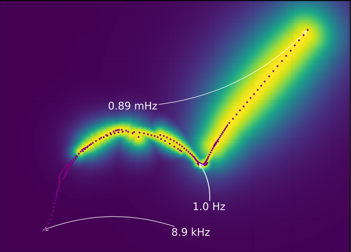
Continuous wavelet transform연속 웨이블릿 변환Biến đổi wavelet liên tục
8.9 kHz → 0.89 mHz
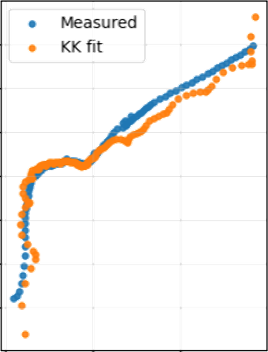
Kramers–Kronig validationKramers–Kronig 검증Kiểm tra Kramers–Kronig
measured vs KK fit측정값 vs KK 피팅đo vs khớp KK
0.89 mHzfrom a single 20-minute record단일 20분 측정으로 도달từ một bản ghi 20 phút
23 m 55 sfull spectrum, against 1 h 37 m with the 0.01 Hz segment전체 스펙트럼 (0.01 Hz 구간 포함 시 1시간 37분)toàn phổ, so với 1 h 37 m nếu đo đoạn 0,01 Hz
< 5 %KK residuals over most of the range대부분 구간에서 KK 잔차sai số KK trên phần lớn dải tần
13 T · 18 SOC11–40 °C and 2.5–4.2 V in 0.1 V steps11–40 °C, 2.5–4.2 V (0.1 V 간격)11–40 °C và 2,5–4,2 V (bước 0,1 V)
With the 0.01 Hz segment0.01 Hz 구간 포함Có đo đoạn 0,01 Hz1 h 37 m
0.01 Hz 5000 s · 0.1 Hz 600 s · 1 Hz 200 s · 10 Hz 30 s · 100 Hz 3 s · 1 kHz 1 s
From 0.1 Hz, low frequencies recovered by the wavelet0.1 Hz부터 시작, 저주파는 웨이블릿으로 복원Từ 0,1 Hz, vùng tần thấp phục hồi bằng wavelet23 m 55 s
0.1 Hz 1200 s · 1 Hz 200 s · 10 Hz 30 s · 100 Hz 3 s · 1 kHz 1 s
Conclusion.결론.Kết luận.A 20-minute record at 0.1 Hz reaches 0.89 mHz, so a full spectrum takes about 24 minutes instead of more than 1.5 hours. The ohmic, charge-transfer and diffusion features match classical EIS, with Kramers–Kronig residuals below 5 % over most of the range. Temperature and SOC series run unattended, each acquisition triggered at dE/dt ≤ 3 mV.0.1 Hz에서 20분 측정으로 0.89 mHz까지 도달, 1.5시간 이상 대신 약 24분 만에 전체 스펙트럼을 확보. 옴 저항·전하전달·확산 거동은 고전적 EIS와 일치하며 Kramers–Kronig 잔차는 대부분 구간에서 5 % 이하. 온도 및 SOC 시리즈는 dE/dt ≤ 3 mV 기준으로 무인 자동 실행.Bản ghi 20 phút ở 0,1 Hz đạt tới 0,89 mHz, thu toàn phổ trong khoảng 24 phút thay vì hơn 1,5 giờ. Các đặc trưng ohmic, chuyển điện tích và khuếch tán trùng khớp EIS cổ điển, sai số Kramers–Kronig dưới 5 % trên phần lớn dải. Chuỗi đo theo nhiệt độ và SOC chạy tự động, kích hoạt theo tiêu chí dE/dt ≤ 3 mV.
Wide-temperature impedance characterization of AlN ceramicsAlN 세라믹의 광온도역 임피던스 특성 평가Phân tích trở kháng gốm AlN trên dải nhiệt độ rộng
AlN is the heater substrate and electrostatic chuck material in semiconductor CVD equipment, where it should insulate — yet it conducts at process temperature. Industrial disks with two proprietary dopants, here A and B, were measured from 30 to 900 °C over 10 mHz–10 MHz under dry air, 500 ppm H2O air, nitrogen and vacuum.AlN은 반도체 CVD 장비의 히터 기판 및 정전척 소재로, 절연체로 기대되지만 공정 온도에서는 전도성을 보입니다. 두 종류의 도판트(A, B로 표기)를 포함한 산업용 시료를 30–900 °C, 10 mHz–10 MHz 범위에서 건조 공기, 500 ppm H2O 공기, 질소, 진공 분위기에서 측정.AlN được dùng làm đế lò gia nhiệt và chuck tĩnh điện trong thiết bị CVD bán dẫn — vốn cần cách điện, nhưng lại dẫn ở nhiệt độ vận hành. Các đĩa gốm công nghiệp chứa hai loại dopant, ở đây gọi là A và B, được đo từ 30 đến 900 °C, dải 10 mHz–10 MHz, trong không khí khô, không khí 500 ppm H2O, nitơ và chân không.
Reading the shorting path out of a frequency-resolved Arrhenius plot주파수별 Arrhenius 분석으로 단락 경로를 분리하기Tách đường ngắn mạch từ biểu đồ Arrhenius phân giải theo tần số
Two dopant systems두 가지 도판트 계Hai hệ dopant
Ag and sputtered Mo/Au electrodesAg · 스퍼터 Mo/Au 전극điện cực Ag và Mo/Au phún xạ
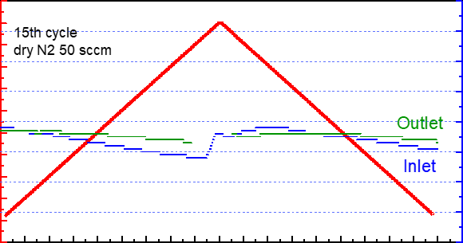
Atmosphere & temperature control분위기·온도 제어Kiểm soát khí quyển & nhiệt độ
inlet vs outlet H2O · 30–900 °C유입·유출 H2O · 30–900 °CH2O vào–ra · 30–900 °C
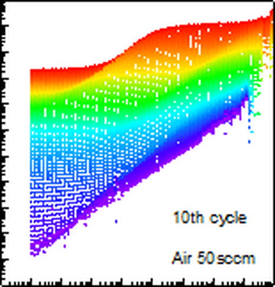
Impedance mapping임피던스 매핑Lập bản đồ trở kháng
10 mHz–10 MHz · colour = temperature10 mHz–10 MHz · 색 = 온도10 mHz–10 MHz · màu = nhiệt độ
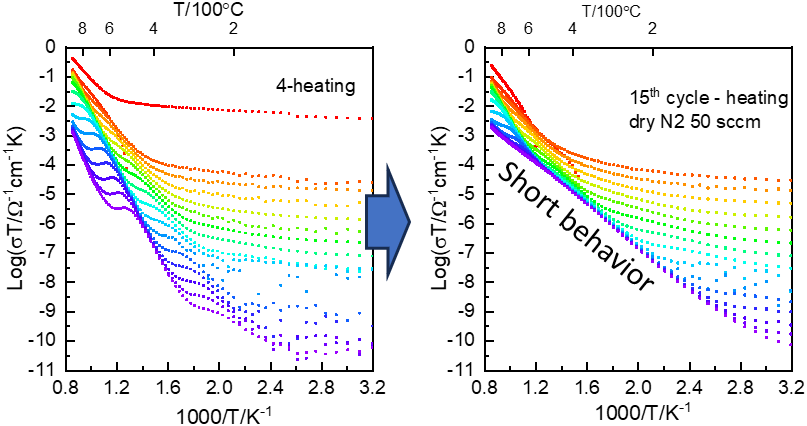
Arrhenius behaviourArrhenius 거동Hành vi Arrhenius
colour = frequency색 = 주파수màu = tần số
30–900 °Cdry air, 500 ppm H2O, nitrogen and vacuum건조 공기, 500 ppm H2O, 질소, 진공không khí khô, 500 ppm H2O, nitơ và chân không
10 mHz – 10 MHzZ, C and Y on the same specimen동일 시료에서 Z, C, Y 동시 분석Z, C và Y trên cùng một mẫu
10 cycles사이클chu kỳthe shorting survives, and returns months later단락 거동이 지속되고 수개월 뒤 재현ngắn mạch vẫn tồn tại và trở lại sau vài tháng
5×10⁻⁴ hPavacuum stage removes the atmosphere as a variable분위기 변수를 제거하는 진공 스테이지buồng chân không loại bỏ ảnh hưởng khí quyển
Three observations that name it a surface path표면 경로임을 말해주는 세 가지 관찰Ba quan sát cho thấy đây là đường dẫn bề mặt
Impedance shifts between runs, capacitance spectra do not임피던스는 측정마다 변하지만 커패시턴스는 그대로Trở kháng đổi giữa các lần đo, phổ điện dung thì khôngparallel path병렬 경로đường song song
Only the low-frequency Arrhenius branches move저주파 Arrhenius 거동만 이동Chỉ nhánh Arrhenius tần số thấp dịch chuyểnnot the bulk벌크 아님không phải bulk
Outlet humidity stays above the inlet through every cycle모든 사이클에서 유출 습도가 유입 습도보다 높게 유지Độ ẩm đầu ra luôn cao hơn đầu vào qua mọi chu kỳsurface reaction표면 반응phản ứng bề mặt
Conclusion.결론.Kết luận.Plotted as log σT against 1000/T with frequency as the colour axis, the response splits in two: high-frequency branches following an activation energy specific to each dopant, and a low-frequency branch common to every sample that runs in parallel with the ceramic — a shorting behaviour driven by surface reaction, not an intrinsic property. It survives about ten thermal cycles and returns months later, so separating it took Mo/Au electrodes in vacuum and real-time inlet–outlet humidity monitoring.log σT를 1000/T에 대해 주파수를 색으로 표현하면 응답이 두 계열로 나뉩니다. 고주파 거동은 도판트별 고유의 활성화 에너지를 따르고, 저주파 거동은 조성과 무관하게 모든 시료에서 나타나며 세라믹과 병렬로 흐릅니다. 재료 본연의 성질이 아니라 표면 반응에 의한 단락 거동입니다. 약 10회의 열 사이클 동안 지속되고 수개월 뒤에도 재현되어, 분리하려면 진공에서의 Mo/Au 전극과 유입·유출 습도 실시간 모니터링이 필요했습니다.Vẽ log σT theo 1000/T với màu là tần số, đáp ứng tách thành hai họ: các nhánh tần số cao đi theo năng lượng hoạt hoá riêng của từng dopant, và một nhánh tần số thấp chung cho mọi mẫu, chạy song song với gốm — là ngắn mạch do phản ứng bề mặt, không phải tính chất nội tại. Nó tồn tại qua khoảng mười chu kỳ nhiệt và trở lại sau vài tháng, nên để tách được cần điện cực Mo/Au trong chân không và giám sát độ ẩm vào–ra theo thời gian thực.
AlNsemiconductor CVD30–900 °Ccontrolled atmosphereArrhenius mappingSamsung ElectronicsGCIM 2023industrial data restricted산업 데이터 비공개dữ liệu công nghiệp hạn chế
Mixed ionic–electronic transport in battery electrode materials배터리 전극 소재의 혼합 이온–전자 전도Vận chuyển ion–điện tử hỗn hợp trong vật liệu điện cực pin
Na3V2(PO4)3 and Li3V2(PO4)3 synthesised by solid-state reaction and packed as bulk pellets in symmetrical coin cells. Each electrode configuration blocks a different carrier, so the electronic, total and ionic response come from one and the same pellet across the α, β, β′ and γ phase transitions.Na3V2(PO4)3와 Li3V2(PO4)3를 고상반응으로 합성하여 벌크 펠릿 형태로 대칭 코인셀에 구성. 전극 구성마다 차단되는 캐리어가 달라, 동일한 펠릿에서 전자·총·이온 응답을 각각 분리해 α, β, β′, γ 상전이 구간에서 관찰.Na3V2(PO4)3 và Li3V2(PO4)3 tổng hợp bằng phản ứng pha rắn, đóng thành pellet trong pin cúc đối xứng. Mỗi cấu hình điện cực chặn một loại hạt tải khác nhau, nên từ cùng một pellet đọc được riêng đáp ứng điện tử, tổng và ion qua các chuyển pha α, β, β′ và γ.
One pellet, three electrode configurations, three transport channels하나의 펠릿, 세 가지 전극 구성, 세 가지 수송 채널Một pellet, ba cấu hình điện cực, ba kênh vận chuyển
metal, alkali metal, liquid or PEO electrolyte금속, 알칼리 금속, 액체·PEO 전해질kim loại, kim loại kiềm, điện giải lỏng hoặc PEO
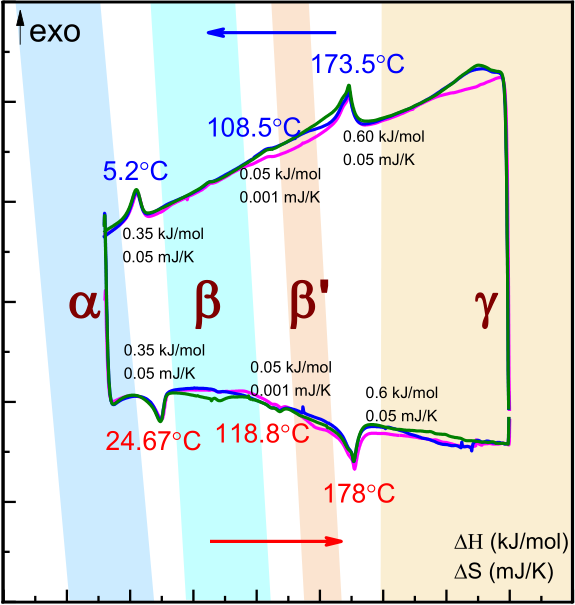
Phase transitions by DSCDSC로 확인한 상전이Chuyển pha xác định bằng DSC
heating and cooling, 10 °C/min승온·냉각, 10 °C/mingia nhiệt và làm nguội, 10 °C/phút
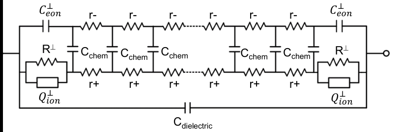
Modified Jamnik–Maier model수정 Jamnik–Maier 모델Mô hình Jamnik–Maier hiệu chỉnh
ionic and electronic rails + Cchem이온·전자 경로 + Cchemkênh ion và điện tử + Cchem
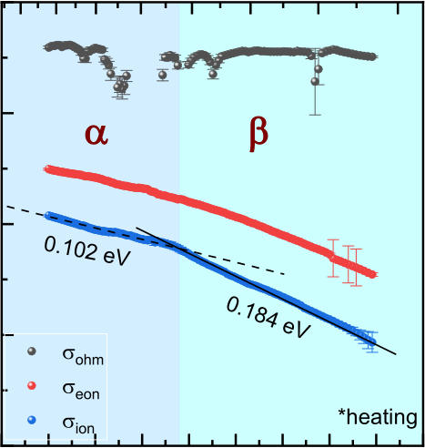
Partial conductivities vs T부분 전도도의 온도 의존성Độ dẫn thành phần theo T
σohm · σeon · σion
α β β′ γfour reversible transitions, all of them visible in transport네 개의 가역 상전이가 모두 수송 거동에 반영bốn chuyển pha thuận nghịch, đều hiện trong vận chuyển
0.10 → 0.18 eVionic activation energy stepping across the α→β boundaryα→β 경계에서 변하는 이온 활성화 에너지năng lượng hoạt hoá ion đổi khi qua ranh giới α→β
5 cell types셀 구성loại pinblocking and reversible electrodes, liquid and polymer electrolytes차단·가역 전극, 액체 및 고분자 전해질điện cực chặn và thuận nghịch, điện giải lỏng và polymer
−70 – 300 °Cimpedance and calorimetry over the same thermal range동일 온도 구간에서의 임피던스·열분석trở kháng và nhiệt lượng trên cùng dải nhiệt độ
What each configuration isolates각 구성이 분리해내는 성분Mỗi cấu hình tách ra thành phần nào
Ag | NVP | Ag — metal electrodes block the ionsAg | NVP | Ag — 금속 전극이 이온을 차단Ag | NVP | Ag — điện cực kim loại chặn ionelectronic전자điện tử
Na | NVP | Na — reversible to both carriersNa | NVP | Na — 두 캐리어 모두에 가역적Na | NVP | Na — thuận nghịch với cả hai hạt tảitotal총 전도tổng
Na | Na+ | NVP | Na+ | Na — the electrolyte blocks the electronsNa | Na+ | NVP | Na+ | Na — 전해질이 전자를 차단Na | Na+ | NVP | Na+ | Na — điện giải chặn điện tửionic이온ion
Li | PEO | LVP | PEO | Li — the same logic carried to the Li systemLi | PEO | LVP | PEO | Li — 동일한 원리를 Li 계에 적용Li | PEO | LVP | PEO | Li — cùng nguyên lý áp dụng cho hệ Lipolymer고분자polymer
Conclusion.결론.Kết luận.Fitted with a modified Jamnik–Maier transmission line, the ionic conductivity, chemical capacitance and interfacial capacitance all step at the temperatures DSC marks as transitions — and lag them on cooling — while the ohmic resistance and dielectric capacitance stay temperature independent. The ionic activation energy moves from about 0.10 eV in α to 0.18 eV in β, so the phase transitions are measurable in transport, not only in calorimetry.수정 Jamnik–Maier 전송선 모델로 피팅한 결과, 이온 전도도·화학 커패시턴스·계면 커패시턴스는 DSC가 가리키는 상전이 온도에서 함께 변화하며 냉각 시에는 지연되어 나타납니다. 반면 옴 저항과 유전 커패시턴스는 온도에 무관합니다. 이온 활성화 에너지는 α상 약 0.10 eV에서 β상 0.18 eV로 이동하여, 상전이가 열분석뿐 아니라 수송 거동에서도 측정 가능함을 보여줍니다.Khi khớp bằng mô hình transmission-line Jamnik–Maier hiệu chỉnh, độ dẫn ion, điện dung hoá học và điện dung giao diện đều thay đổi đúng tại các nhiệt độ mà DSC ghi nhận chuyển pha — và trễ lại khi làm nguội — trong khi điện trở ohmic và điện dung điện môi không phụ thuộc nhiệt độ. Năng lượng hoạt hoá ion dịch từ khoảng 0,10 eV ở pha α lên 0,18 eV ở pha β, cho thấy chuyển pha đo được ngay trong hành vi vận chuyển chứ không chỉ trong nhiệt lượng.
NVPLVPNa-ionDSCJamnik–Maier TLMICC8 2021
Nernst–Planck modelling of polymer and liquid electrolytes고분자·액체 전해질의 Nernst–Planck 모델링Mô hình Nernst–Planck cho chất điện giải polymer và lỏng
P(EO)18:LiTFSI and 1 M LiPF6 in EC/DMC, assembled as symmetrical Li|electrolyte|Li coin cells with no separator, glass fibre or Celgard. The lithium transference number is obtained twice — from DC polarisation and from a Nernst–Planck transmission line fitted to the impedance — so the two routes check each other.P(EO)18:LiTFSI 및 1 M LiPF6 in EC/DMC를 분리막 없음·유리섬유·Celgard 세 가지 구성의 대칭 Li|전해질|Li 코인셀로 제작. 리튬 수송률을 DC 분극과 Nernst–Planck 전송선 피팅 두 경로로 각각 산출하여 상호 검증.P(EO)18:LiTFSI và 1 M LiPF6 trong EC/DMC, lắp thành pin cúc đối xứng Li|điện giải|Li với ba cấu hình: không màng ngăn, sợi thuỷ tinh và Celgard. Số vận chuyển lithium được xác định theo hai đường độc lập — phân cực DC và khớp mô hình transmission-line Nernst–Planck — để kiểm chứng lẫn nhau.
Two independent routes to the same transference number동일한 수송률에 도달하는 두 가지 독립 경로Hai con đường độc lập dẫn tới cùng một số vận chuyển
t+ ≈ 0.1for P(EO)18LiTFSI, flat across the whole temperature rangeP(EO)18LiTFSI, 전 온도 구간에서 일정với P(EO)18LiTFSI, không đổi trên toàn dải nhiệt độ
2 routes경로hướngDC polarisation and impedance fitting, in agreement with each otherDC 분극과 임피던스 피팅 결과가 서로 일치phân cực DC và khớp trở kháng, cho kết quả trùng nhau
1 MHz – 1 mHzimpedance from 10 to 65 °C, DC polarisation from 30 to 90 °C임피던스 10–65 °C, DC 분극 30–90 °Ctrở kháng 10–65 °C, phân cực DC 30–90 °C
3 separators분리막 구성cấu hình màngnone, glass fibre and Celgard, each measured on heating and cooling없음·유리섬유·Celgard, 승온 및 냉각 모두 측정không màng, sợi thuỷ tinh và Celgard, đo cả khi tăng và giảm nhiệt
What the model build-up teaches모델을 단계적으로 쌓으며 배우는 것Xây mô hình theo từng bước để học được gì
Adding one element at a time shows where each of them acts: Rct and Cdl shape the high-frequency arc, Cchem the low-frequency branch요소를 하나씩 추가하면 각 요소가 작용하는 대역이 드러남: Rct·Cdl은 고주파 반원, Cchem은 저주파 영역Thêm từng phần tử một cho thấy mỗi phần tử tác động ở đâu: Rct và Cdl định hình cung tần cao, Cchem chi phối vùng tần thấpelement ↔ frequency요소 ↔ 주파수phần tử ↔ tần số
Rct falls as PEO softens, while Cchem, C0, dC and QW stay temperature independentPEO가 연화되며 Rct는 감소, Cchem·C0·dC·QW는 온도에 무관Rct giảm khi PEO mềm ra, còn Cchem, C0, dC và QW không phụ thuộc nhiệt độcontact, not transport접촉의 문제do tiếp xúc
The DC limit is out of reach for PEO but accessible for the liquid cells, so each system needs its own route to t+PEO는 DC 극한에 도달할 수 없고 액체 셀은 가능하여, 계마다 다른 경로가 필요Giới hạn DC không đạt được với PEO nhưng đạt được với pin điện giải lỏng, nên mỗi hệ cần một hướng riêngwhy two routes두 경로의 이유lý do hai hướng
Conclusion.결론.Kết luận.Building the transmission line one element at a time maps each circuit element to the frequency window where it actually acts, which is what makes the fitted parameters interpretable. The transference numbers from impedance fitting then agree with those from DC polarisation and with published values for the same polymer, and both methods give the same Arrhenius behaviour. For P(EO)18LiTFSI t+ is temperature independent, whereas the liquid cells drift with temperature and with the separator — the separator is part of the measurement, not a passive spacer.전송선 모델을 요소 단위로 쌓아 올리면 각 회로 요소가 실제로 작용하는 주파수 대역을 파악할 수 있고, 그 결과 피팅 파라미터를 해석할 수 있게 됩니다. 이렇게 얻은 수송률은 DC 분극 결과 및 동일 고분자에 대한 문헌 값과 일치하며, 두 방법의 Arrhenius 거동도 동일합니다. P(EO)18LiTFSI의 t+는 온도에 무관한 반면, 액체 전해질 셀은 온도와 분리막 종류에 따라 변합니다. 분리막은 단순한 스페이서가 아니라 측정의 일부입니다.Xây mô hình transmission-line theo từng phần tử cho phép xác định mỗi phần tử mạch thực sự đáp ứng ở dải tần nào, nhờ đó các tham số khớp được mới có thể diễn giải. Số vận chuyển thu từ khớp trở kháng sau đó trùng với kết quả phân cực DC và với giá trị đã công bố cho cùng loại polymer, và cả hai phương pháp cho cùng hành vi Arrhenius. Với P(EO)18LiTFSI, t+ không phụ thuộc nhiệt độ, trong khi các pin điện giải lỏng thay đổi theo nhiệt độ và theo màng ngăn — màng ngăn là một phần của phép đo, không phải miếng đệm thụ động.
Beyond the brick-layer model: polycrystalline solid electrolytesBrick-layer 모델을 넘어서: 다결정 고체 전해질Vượt qua mô hình brick-layer: chất điện giải rắn đa tinh thể
Li7La3Zr2O12 pellets from the same powder but different sintering routes, so that phase and microstructure differ while the chemistry does not. Phases were checked by XRD and microstructure by SEM before impedance was measured as one continuous temperature series from −73 to 130 °C over 1 Hz–1 MHz.동일한 분말을 서로 다른 소결 조건으로 처리하여 조성은 같고 상과 미세구조만 다른 Li7La3Zr2O12 펠릿을 준비. XRD로 상을, SEM으로 미세구조를 확인한 뒤 −73~130 °C, 1 Hz–1 MHz 구간에서 하나의 연속 온도 계열로 임피던스를 측정.Các pellet Li7La3Zr2O12 từ cùng một loại bột nhưng thiêu kết theo các chế độ khác nhau, nên pha và vi cấu trúc khác nhau còn thành phần thì không. Pha được kiểm tra bằng XRD, vi cấu trúc bằng SEM, trước khi đo trở kháng thành một chuỗi nhiệt độ liên tục từ −73 đến 130 °C, dải 1 Hz–1 MHz.
One model, the whole temperature series, every representation하나의 모델로 전체 온도 계열과 모든 표현을 동시에Một mô hình, toàn chuỗi nhiệt độ, mọi cách biểu diễn
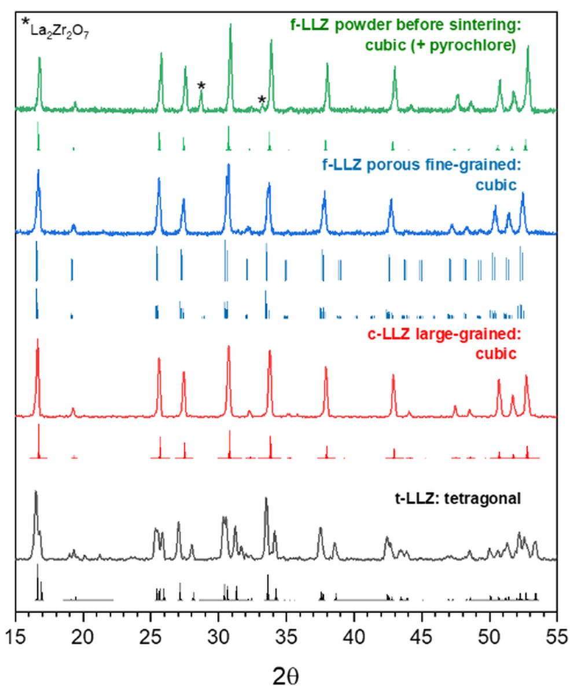
Phase analysis by XRDXRD 상 분석Phân tích pha bằng XRD
measured patterns vs simulated peaks측정 패턴과 계산 피크 비교phổ đo so với vị trí đỉnh mô phỏng
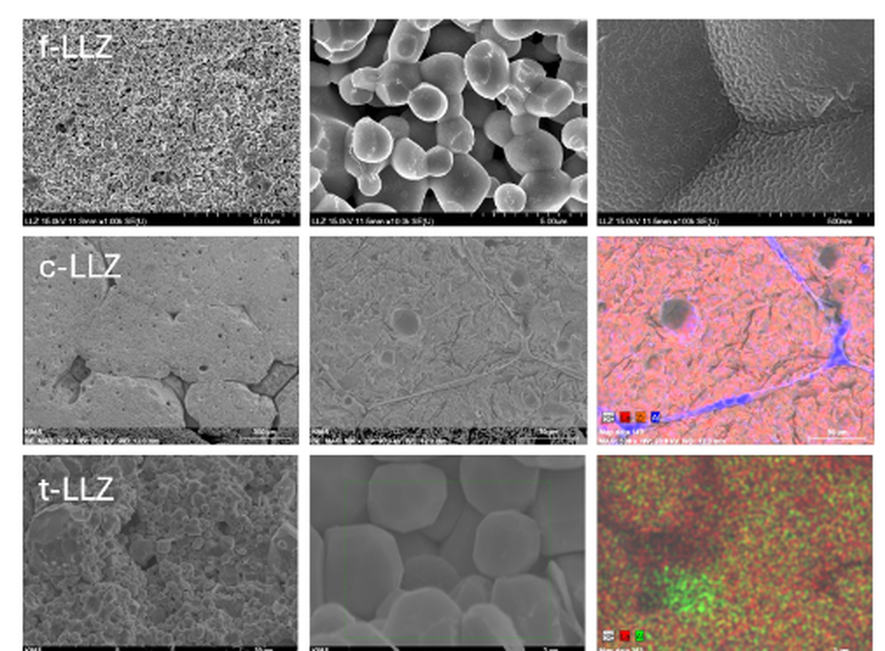
Microstructure by SEM and EDSSEM·EDS 미세구조 분석Vi cấu trúc bằng SEM và EDS
polished, etched and fractured surfaces연마·식각·파단면 관찰mặt đánh bóng, ăn mòn và mặt gãy
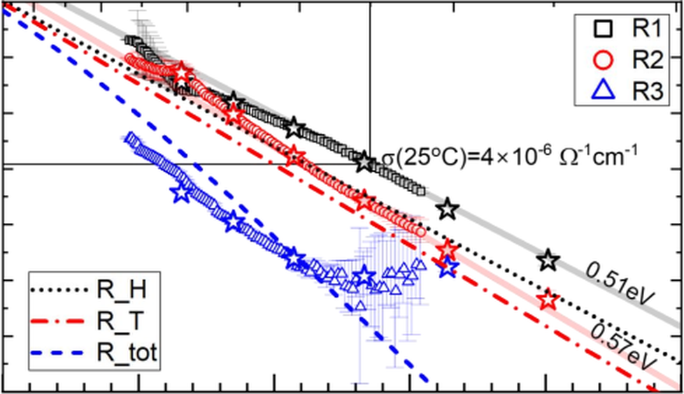
Brick-layer resistances vs TBrick-layer 저항의 온도 의존성Điện trở brick-layer theo T
each spectrum fitted on its own스펙트럼별 개별 피팅 결과khớp riêng từng phổ
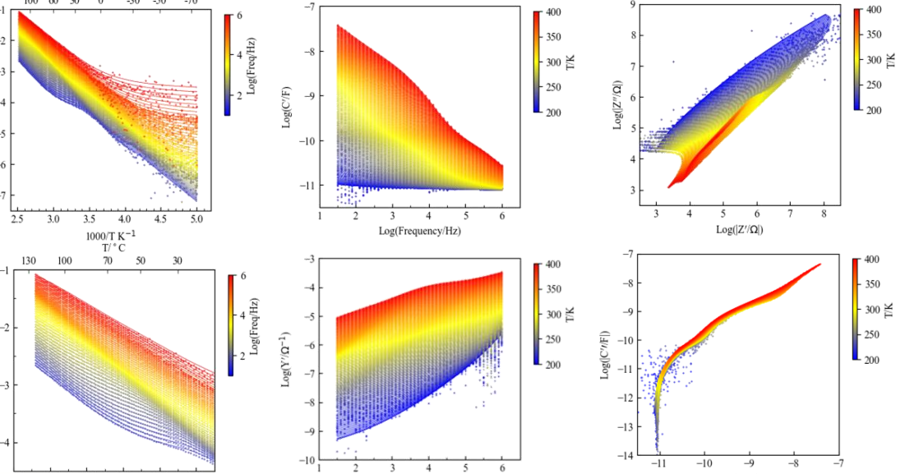
CPE-free impedance modelling over temperature range온도 전 구간에 대한 CPE 없는 임피던스 모델링Mô hình trở kháng không dùng CPE trên toàn dải nhiệt độ
σT · Z · Y · C
3 pellets펠릿pelletsame powder, different sintering routes, checked by XRD and SEM동일 분말·상이한 소결 조건, XRD와 SEM으로 확인cùng bột, khác chế độ thiêu kết, kiểm tra bằng XRD và SEM
200 – 400 Kone continuous series, reproduced in every representation하나의 연속 계열을 모든 표현에서 재현một chuỗi liên tục, tái hiện trên mọi biểu diễn
no CPEsCPE 없이không CPEevery parameter carries a physical meaning and an activation energy모든 파라미터가 물리적 의미와 활성화 에너지를 가짐mọi tham số đều mang ý nghĩa vật lý và một năng lượng hoạt hoá
~12 parameters파라미터tham sốdescribing hundreds of spectra at once수백 개의 스펙트럼을 한 번에 기술mô tả cùng lúc hàng trăm phổ
Why the whole series has to be fitted at once전체 계열을 동시에 피팅해야 하는 이유Vì sao phải khớp cả chuỗi cùng lúc
A spectrum fitted on its own can be matched by many parameter sets개별 스펙트럼은 여러 파라미터 조합으로 맞출 수 있음Một phổ khớp riêng lẻ có thể được khớp bởi nhiều bộ tham sốambiguous alone단독으론 모호riêng lẻ thì mơ hồ
Tying every parameter to an activation energy makes the temperature dependence part of the model모든 파라미터를 활성화 에너지에 연결하면 온도 의존성이 모델의 일부가 됨Gắn mọi tham số với một năng lượng hoạt hoá đưa sự phụ thuộc nhiệt độ vào chính mô hìnhseries constrains계열이 구속chuỗi ràng buộc
The same parameters must hold in impedance, admittance and capacitance simultaneously동일한 파라미터가 임피던스·어드미턴스·커패시턴스에서 동시에 성립해야 함Cùng bộ tham số phải đúng đồng thời trên trở kháng, dẫn nạp và điện dungno hidden freedom여유 없음không còn tự do ẩn
Conclusion.결론.Kết luận.A single physics-based model — dispersive bulk and grain-boundary responses plus a transmission line with interfacial impedance for the electrodes — describes the entire temperature series at once, with every parameter tied to an activation energy. It has to hold in the impedance, admittance and capacitance representations simultaneously, which is what keeps the fitted quantities physically meaningful where conventional CPE fitting returns numbers without physico-chemical content. Implemented as a Python least-squares pipeline.분산성 벌크·입계 응답과 계면 임피던스를 갖는 전송선 모델을 결합한 단일 물리 기반 모델로 전체 온도 계열을 동시에 기술했으며, 모든 파라미터는 활성화 에너지에 연결됩니다. 이 모델은 임피던스·어드미턴스·커패시턴스 표현에서 동시에 성립해야 하므로, 물리화학적 의미 없는 수치만 주는 기존 CPE 피팅과 달리 파라미터가 물리적 의미를 유지합니다. Python 최소자승 파이프라인으로 구현.Một mô hình dựa trên vật lý duy nhất — đáp ứng tán sắc của bulk và biên hạt, cùng transmission-line có trở kháng giao diện cho điện cực — mô tả đồng thời toàn bộ chuỗi nhiệt độ, mọi tham số đều gắn với một năng lượng hoạt hoá. Mô hình phải đúng cùng lúc trên biểu diễn trở kháng, dẫn nạp và điện dung, nhờ đó các đại lượng khớp được giữ nguyên ý nghĩa vật lý, khác với fit CPE thông thường vốn chỉ cho ra con số không mang nội dung hoá lý. Triển khai bằng pipeline least-squares trong Python.
Human body segment impedance: artefacts and modelling인체 부위별 임피던스: 아티팩트와 모델링Trở kháng theo vùng cơ thể người: nhiễu đo và mô hình
Over three years, more than 5,000 EIS datasets from 500+ IRB-approved participants, measured in ten segmental configurations from 1 MHz to 1 Hz with a BioLogic SP-200 and a Keithley 2700/7708 multiplexer under LabVIEW control, alongside InBody 720 body composition and Styku 3D body scans.3년에 걸쳐 IRB 승인 참가자 500명 이상으로부터 5,000건 이상의 EIS 데이터를 수집. BioLogic SP-200과 Keithley 2700/7708 멀티플렉서를 LabVIEW로 제어하여 10가지 부위 구성을 1 MHz–1 Hz에서 측정하고, InBody 720 체성분 및 Styku 3D 스캔 데이터와 함께 분석.Trong ba năm, hơn 5.000 bộ dữ liệu EIS từ hơn 500 người tham gia được IRB phê duyệt, đo ở mười cấu hình vùng cơ thể từ 1 MHz đến 1 Hz bằng BioLogic SP-200 và multiplexer Keithley 2700/7708 điều khiển qua LabVIEW, kèm dữ liệu thành phần cơ thể InBody 720 và quét 3D Styku.
Removing the instrument from the measurement before modelling the body인체를 모델링하기 전에 측정 장비의 기여를 제거하기Loại bỏ phần đóng góp của thiết bị trước khi mô hình hoá cơ thể
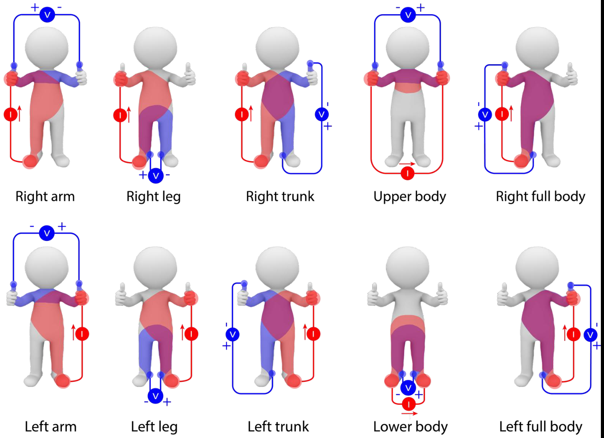
Ten segmental modes10가지 부위 측정 모드Mười chế độ đo theo vùng
arms, legs, trunk, half body · 61 points팔·다리·몸통·상하좌우 · 61개 주파수tay, chân, thân, nửa người · 61 điểm
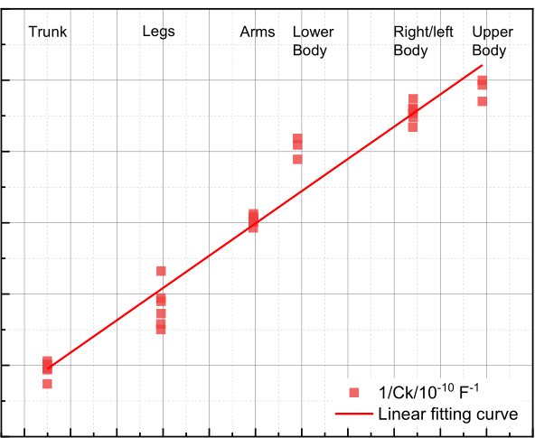
Stray capacitance of the chain측정 회로의 부유 정전용량Điện dung ký sinh của hệ đo
1/Ck vs segmental resistance1/Ck 대 부위 저항1/Ck theo điện trở vùng
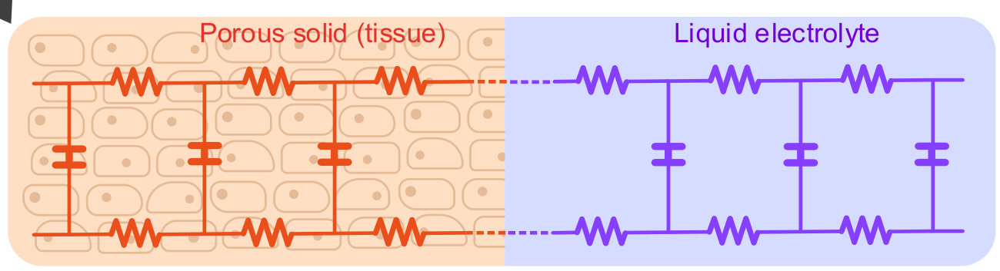
Tissue as porous solid + vessel다공성 조직 + 체액 통로 모델Mô xốp + mạch dịch
Nernst–Planck transmission line, PythonNernst–Planck 전송선 모델, Pythontransmission line Nernst–Planck, Python
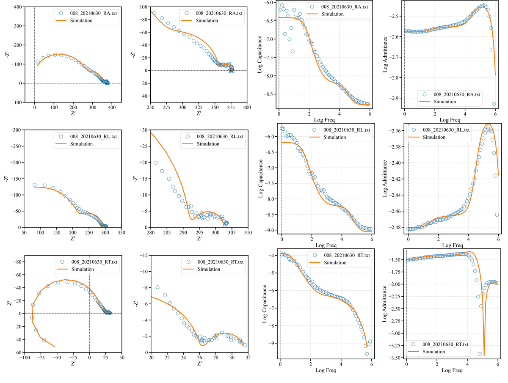
Body segment impedance simulation부위별 인체 임피던스 시뮬레이션Mô phỏng trở kháng theo vùng cơ thể
arm, leg and trunk with the model at left왼쪽 모델로 계산한 팔·다리·몸통tay, chân và thân với mô hình bên trái
5,000+ datasets데이터bộ dữ liệufrom 500+ participants over three years, IRB approved3년간 500명 이상 참가자, IRB 승인từ hơn 500 người trong ba năm, được IRB phê duyệt
3 instruments측정 방식hệ đoimpedance, body composition and 3D geometry on the same person동일 참가자에 대한 임피던스·체성분·3D 형상 측정trở kháng, thành phần cơ thể và hình học 3D trên cùng một người
8 pF – 0.3 nFstray capacitances of the measurement chain, quantified one by one측정 회로의 부유 정전용량을 개별적으로 정량화điện dung ký sinh của hệ đo, định lượng từng thành phần
Z · C · Yevery segment reproduced in all three representations by one model하나의 모델로 모든 부위를 세 가지 표현에서 동시에 재현mọi vùng đều tái hiện trên cả ba biểu diễn bằng một mô hình
Three measurement streams on every participant참가자마다 수집한 세 가지 측정 데이터Ba luồng dữ liệu trên mỗi người tham gia
Multi-frequency EIS on ten body segments, switched by a multiplexer under LabVIEWLabVIEW로 멀티플렉서를 제어하여 10개 부위의 다주파수 EIS 측정EIS đa tần trên mười vùng cơ thể, chuyển kênh bằng multiplexer điều khiển qua LabVIEWSP-200
Body composition indices and segmental impedance at a few fixed frequencies체성분 지표와 몇 개의 고정 주파수에서의 부위별 임피던스Chỉ số thành phần cơ thể và trở kháng theo vùng tại vài tần số cố địnhInBody 720
3D body scans turned into segment geometry, so the shape factor is measured rather than assumed3D 스캔으로부터 부위 형상을 산출하여, 형상 인자를 가정이 아닌 측정값으로 사용Quét 3D chuyển thành hình học từng vùng, nên hệ số hình dạng được đo chứ không phải giả địnhStyku + COMSOL
Conclusion.결론.Kết luận.The measurement chain has stray capacitances of its own, and the multiplexer contribution scales inversely with the segment resistance being measured — so the artefact changes from one body segment to the next and had to be quantified and built into the simulation before any body response could be modelled. Once corrected, Rtotal/Rext settles near 2/3 for arm and leg and 1/2 for trunk, close to the anion transference number of NaCl solution, which we interpret through an inhomogeneously distributed Nernst–Planck body fluid — tissue as a porous solid in series with a liquid vessel, simulated in Python.측정 회로 자체가 부유 정전용량을 가지며, 멀티플렉서의 기여는 측정 대상 부위 저항에 반비례합니다. 따라서 아티팩트가 부위마다 달라지므로, 인체 응답을 모델링하기 전에 이를 정량화하여 시뮬레이션에 포함해야 했습니다. 보정 후 Rtotal/Rext는 팔·다리에서 약 2/3, 몸통에서 약 1/2로 수렴하며, 이는 NaCl 용액의 음이온 수송률에 가깝습니다. 다공성 조직과 체액 통로가 직렬로 연결된 불균일 분포 Nernst–Planck 체액 모델로 해석하고 Python으로 시뮬레이션했습니다.Bản thân chuỗi đo có điện dung ký sinh riêng, và phần đóng góp của multiplexer tỉ lệ nghịch với điện trở vùng đang đo — nghĩa là nhiễu thay đổi theo từng vùng cơ thể, phải định lượng và đưa vào mô phỏng trước khi mô hình hoá đáp ứng của cơ thể. Sau hiệu chỉnh, Rtotal/Rext hội tụ quanh 2/3 với tay và chân, 1/2 với thân, gần với số vận chuyển anion của dung dịch NaCl — được diễn giải bằng mô hình dịch cơ thể Nernst–Planck phân bố không đồng nhất: mô như chất rắn xốp nối tiếp với mạch dịch, mô phỏng bằng Python.
bioimpedancestray capacitanceNernst–Planck TLMLabVIEW / Python3D scan + COMSOL5,000+ datasetsAEIS 2024participant data not shared참가자 데이터 비공개dữ liệu người tham gia không chia sẻ
Background이력Quá trình
Experience & education경력 및 학력Kinh nghiệm & học vấn
Experience경력Kinh nghiệm
2024.09 — present현재nay
Postdoctoral Researcher, Chonnam National University박사후연구원, 전남대학교Nghiên cứu viên sau tiến sĩ, Đại học Quốc gia Chonnam
Impedance methodology and automated measurement platforms for ionics materials; industry programmes with Samsung Electronics and Samsung SDI. Seven funded research programmes delivered.이온 전도 재료를 위한 임피던스 방법론 및 자동 측정 플랫폼 개발. 삼성전자·삼성SDI 산학 과제 포함, 총 7개 연구 과제 수행.Phương pháp luận trở kháng và hệ đo tự động cho vật liệu ion; các đề tài hợp tác với Samsung Electronics và Samsung SDI. Đã hoàn thành 7 đề tài nghiên cứu.
2016.03 — 2024.08
Graduate Researcher (M.Sc., Ph.D.), Chonnam National University대학원 연구원 (석사·박사), 전남대학교Nghiên cứu sinh (Thạc sĩ, Tiến sĩ), Đại học Quốc gia Chonnam
Impedance modelling of solid electrolytes and mixed conductors; bioimpedance study with 500+ IRB-approved participants and over 5,000 EIS datasets; ceramic processing and structural characterization (XRD, SEM/FE-SEM, TEM).고체 전해질 및 혼합 전도체의 임피던스 모델링, IRB 승인 참가자 500명 이상·EIS 데이터 5,000건 이상의 생체 임피던스 연구, 세라믹 공정 및 구조 분석(XRD, SEM/FE-SEM, TEM).Mô hình trở kháng chất điện giải rắn và dẫn hỗn hợp; nghiên cứu bioimpedance với hơn 500 người tham gia được IRB phê duyệt và trên 5.000 bộ dữ liệu EIS; chế tạo gốm và phân tích cấu trúc (XRD, SEM/FE-SEM, TEM).
Education학력Học vấn
2018 — 2024
Ph.D., Materials Science & Engineering — Chonnam National University공학박사, 신소재공학 — 전남대학교Tiến sĩ, Khoa học & Kỹ thuật Vật liệu — Đại học Quốc gia Chonnam
Physics-based impedance modelling of mixed conductors, electrolytes and body segments.혼합 전도체·전해질·인체 조직의 물리 기반 임피던스 모델링.Mô hình trở kháng dựa trên vật lý cho dẫn hỗn hợp, chất điện giải và mô cơ thể.
2016 — 2018
M.Sc., Materials Science & Engineering — Chonnam National University공학석사, 신소재공학 — 전남대학교Thạc sĩ, Khoa học & Kỹ thuật Vật liệu — Đại học Quốc gia Chonnam
2011 — 2015
B.Sc., Materials Science — University of Science, Ho Chi Minh City이학사, 재료과학 — 호치민시 자연과학대학교Cử nhân, Khoa học Vật liệu — Trường Đại học Khoa học Tự nhiên, TP. Hồ Chí Minh
Awards & languages수상 및 언어Giải thưởng & ngôn ngữ
Best Poster Prize, 4th AEIS, Japan (2024) · BK21 Graduate Research Fellowship, NRF Korea (2018–2022) · Vietnamese (native), English (professional), Korean (TOPIK 4)제4회 AEIS 우수 포스터상, 일본 (2024) · BK21 대학원 연구장학금, 한국연구재단 (2018–2022) · 베트남어(모국어), 영어(업무 가능), 한국어(TOPIK 4급)Giải Poster xuất sắc, AEIS lần thứ 4, Nhật Bản (2024) · Học bổng nghiên cứu BK21, NRF Hàn Quốc (2018–2022) · Tiếng Việt (bản ngữ), tiếng Anh (thành thạo), tiếng Hàn (TOPIK 4)
Publications논문Công bố
Peer-reviewed work학술 논문Bài báo khoa học
Journal articles학술지 논문Bài báo tạp chí
N. Ecebaş, A. Ayuningsih, T. T. H. Tran, J. G. Fisher, JS. Lee, WJ. Choi, W. Jo.
Processing and optimization of textured (Na0.5Bi0.5)TiO3–BaTiO3–SrTiO3 incipient piezoelectric ceramics by templated grain growth using NaNbO3 templates.
Journal of the Korean Ceramic Society, 2026.
N. Ecebaş, T. T. H. Tran, J. G. Fisher, JS. Lee, WJ. Choi, YB. Han, W. Jo.
The effect of sintering atmosphere and temperature on densification, grain growth behaviour and electrical properties of 0.685(Na0.5Bi0.5)TiO3–0.065BaTiO3–0.25SrTiO3 ceramics.
Crystals 16(2), 143, 2026.
A. Ayuningsih, N. Ecebaş, T. T. H. Tran, J. G. Fisher, JS. Lee, WJ. Choi, W. Jo.
Texturing (Na0.5Bi0.5)TiO3–KNbO3–SrTiO3 electrostrictive ceramics by templated grain growth using (Na0.5Bi0.5)TiO3 platelets.
Inorganics 13(12), 387, 2025.
I. Abbas, H. T. Tran, T. T. N. Tran, T. L. Pham, EC. Shin, CW. Park, SB. Yu, O. J. Lee, AG. Nguyen, D. Jeong, et al.
GITT limitations and EIS insights into kinetics of NMC622.
Batteries 11(6), 234, 2025.
K. Andleeb, T. T. Doan, J. G. Fisher, T. T. H. Tran, JS. Lee, WJ. Choi, W. Jo.
Fabrication of textured 0.685(Na0.5Bi0.5)TiO3–0.065BaTiO3–0.25SrTiO3 electrostrictive ceramics by templated grain growth using NaNbO3 templates and characterization of their electrical properties.
Crystals 14(10), 861, 2024.
T. T. Doan, J. G. Fisher, JS. Lee, H. T. Tran, J. Gao, J. Mok, J. Lee, A. Benčan, G. Dražić, S. B. Junaid, et al.
Growth of KNbO3 single crystals by the flux method using KBO2 as a flux.
Inorganics 12(6), 151, 2024.
P. G. Le, H. T. Tran, JS. Lee, J. G. Fisher, HP. Kim, W. Jo, WJ. Moon.
Growth of single crystals in the (Na1/2Bi1/2)TiO3–(Sr1−xCax)TiO3 system by solid state crystal growth.
Journal of Advanced Ceramics 10(5), 973–990, 2021.
H. Sun, J. G. Fisher, SH. Moon, H. T. Tran, JS. Lee, HS. Han, HP. Kim, W. Jo.
Solid-state growth of lead-free piezoelectric (Na1/2Bi1/2)TiO3–CaTiO3 single crystals and their characterization.
Materials Science and Engineering: B 223, 109–119, 2017.
Conference proceedings학술대회 발표Kỷ yếu hội nghị
JS. Lee, T. T. H. Tran, CW. Park, T. L. Pham, EC. Shin, K. S. Yun, H. J. Kim, JH. Yu.
Physics-based EIS modeling of solid oxide cells: ionic/electronic rails, diffusion–reaction kinetics, and gas transport.
ECS Meeting Abstracts, SOFC 2025.
T. T. H. Tran, T. L. Pham, J. Kim, EC. Shin, CW. Ahn, DS. Park, N. Shin, J. Kim, JS. Lee.
Physics-based impedance modeling of polycrystalline solid electrolytes assisted by data science tools: application to Li7La3Zr2O12.
Proc. 24th International Conference on Solid State Ionics (SSI-24), 2024.
Conference presentations국내외 학회 발표Trình bày tại hội nghị
Most of this work is presented and discussed at conferences before it appears in print. Presenting author in bold.이 연구들은 대부분 논문으로 출판되기 전에 학회에서 발표되고 논의되었습니다. 발표자는 굵게 표시.Phần lớn các nghiên cứu này được trình bày và thảo luận tại hội nghị trước khi công bố trên tạp chí. Người trình bày in đậm.
T. T. H. Tran, CW. Park, OJ. Lee, SB. Yu, P. Boškoski, JS. Lee.
Fast EIS for cylindrical Li-ion cells using PRBS excitation and continuous wavelet transform.
Poster · GRC Batteries, Ventura, CA, USA · 15–20 Feb 2026
T. T. H. Tran, T. L. Pham, L. Tran, N. T. Tran, JK. Kim, JS. Lee.
Advanced numerical simulation and modeling for human body segment impedance analysis.
Oral · 4th AEIS, Japan · 2024 · Best Poster Prize
T. T. H. Tran, A. G. Nguyen, I. Abbas, CJ. Park, JS. Lee.
Advancing battery electrolyte studies: unravelling the nuances with Nernst–Planck, porous electrode, and transmission line models.
Poster · GRC Batteries, Ventura, CA, USA · 25 Feb – 1 Mar 2024
T. T. H. Tran, T. L. Pham, JH. Kim, JS. Lee.
Ultimate description of the impedance of polycrystalline electrolytes: application to LLZ and sodium beta alumina.
Poster · GRS Batteries, Ventura, CA, USA · 24–25 Feb 2024
T. T. H. Tran, T. L. Pham, J. Kim, EC. Shin, CW. Ahn, DS. Park, N. Shin, J. Kim, JS. Lee.
Physics-based impedance modeling of polycrystalline solid electrolytes assisted by data science tools: application to Li7La3Zr2O12.
TODO Poster / Oral · 24th International Conference on Solid State Ionics (SSI-24) · 2024
T. T. H. Tran, N. Ecebaş, R. Rupaya, T. L. Pham, J. G. Fisher, JS. Lee.
Wide-temperature and frequency impedance characterization of AlN ceramics.
Poster · Global Conference on Innovation in Materials (GCIM), Jeju, Korea · 6–9 Jun 2023
T. T. H. Tran, P. Didwal, T. L. Pham, SH. Park, JK. Kim, CJ. Park, JS. Lee.
Characterization of model electrochemical cells with mixed conducting Na3V2(PO4)3 and Li3V2(PO4)3 cathode materials.
TODO Poster / Oral · 8th International Congress on Ceramics (ICC8), Busan, Korea · 25–30 Apr 2021